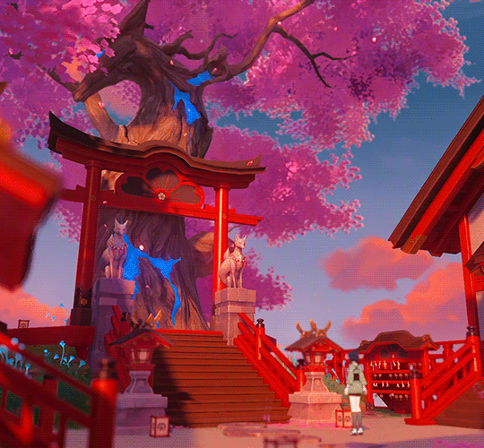

collections
- 
Why?
Yae Miko
What?
The Grand Narukami Shrine was built before the Archon War and Hakushin served as its first attendant. Around 500 years ago, the shrine was led by Kitsune Saiguu and the Great Tengu, the Chieftain of the Yougou Tengu. The shrine priestess Asase Hibiki and the tengu Teruyo also dwelt there for a time. Asase Hibiki took over the shrine after Saiguu's death, but ultimately moved back to the Asase Shrine during Ako Domeki's rebellion, now the shrine is led by lady guuji.